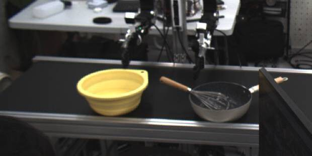
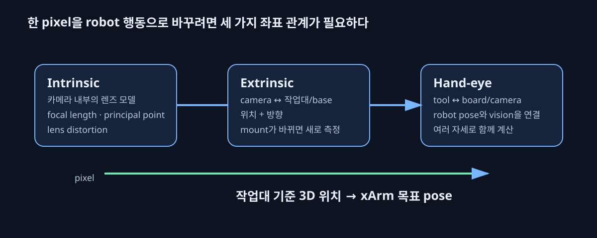

카메라가 보인다는 것과, robot이 정확히 집을 수 있다는 것은 다르다.
다중 camera preview와 저장된 intrinsic 결과를 확인해 AutoDex용 관측 camera를 고를 출발점은 확보했다. 하지만 2D 영상의 pixel을 xArm이 움직일 3D 위치로 바꾸려면 stream, intrinsic, extrinsic, hand-eye를 차례로 검증해야 한다.

한 pixel이 grasp pose가 되는 과정

카메라는 물체를 pixel 좌표로 본다. robot은 millimetre 단위의 3D 위치와 방향을 필요로 한다. 그 사이를 잇는 것이 calibration이다. 어느 한 값이 틀리면 화면에서는 물체 위치가 그럴듯해도 hand가 실제 물체 옆으로 갈 수 있다.
세 가지 calibration을 쉬운 말로 구분하기
| 이름 | 질문 | 언제 바뀌나 | 이번 판단 |
|---|---|---|---|
| Intrinsic | 이 렌즈는 3D 빛을 어떤 pixel로 찍는가? | lens, focus, resolution, pixel format 변경 | 같은 camera 조건이면 검증 후 재사용 후보 |
| Extrinsic | camera는 작업대를 어디서 어느 방향으로 보는가? | mount, tripod, workcell 이동 | 새 xArm workcell에서 다시 측정 |
| Hand-eye | robot base/tool과 board·camera 좌표는 어떻게 연결되는가? | robot, board, camera 상대 배치 변경 | 새 환경에서 다시 측정 |
Intrinsic은 안경의 도수처럼 카메라 내부 특성이다. Extrinsic은 방 안에서 안경을 쓴 사람이 어디에 서서 어느 방향을 보는지다. Hand-eye는 그 사람이 “내 손을 이 pixel이 가리키는 실제 물체로 보내려면 어느 방향으로 움직여야 하나”를 아는 좌표계 연결이다.
왜 저장된 intrinsic을 바로 믿지 않는가
기존 RoboHome 값은 같은 serial·lens·해상도·format 조건에서 유용한 출발점이다. OpenCV의 pinhole model은 focal length, principal point, lens distortion으로 pixel 투영을 설명한다. 하지만 image size나 focus가 달라지면 같은 숫자가 더 이상 맞지 않을 수 있다. 그래서 선택 camera마다 Charuco board corner를 다시 검출하고, 저장된 intrinsic으로 재투영했을 때 pixel 오차가 충분히 작은지 확인한다.
현재 문제를 어떻게 분리했나
- 등록 여부: configuration에 존재하는 camera와 현재 frame을 보내는 camera는 다르다.
- stream 도달: 중앙 viewer에서 preview가 보이면 capture PC→viewer 경로는 동작한다.
- 현재성: timestamp가 새로 갱신되는지 확인해야 “지금도 live”라고 말할 수 있다.
- 접속 경로: remote viewer 경로가 다시 확인될 때까지 selected camera의 최신 frame 상태를 단정하지 않는다.
- geometry: live 확인 뒤에야 intrinsic validation, extrinsic, hand-eye를 수행한다.
AutoDex M0에서의 최소 camera 계약
- 작업대·basket·접근 방향을 함께 보는 live camera 2–4대를 선택한다.
- 각 camera의 serial, resolution, pixel format, timestamp 상태는 private manifest에만 고정한다.
- 기존 intrinsic을 board reprojection으로 검증하고 조건이 달라진 camera만 재보정한다.
- xArm에 고정한 Charuco board로 현재 workcell의 extrinsic·hand-eye를 자동 capture한다.
- 동일 물체가 여러 view에서 일관된 3D pose를 내는지 확인한 뒤 grasp planner에 전달한다.
공개와 비공개의 경계
이 페이지에는 진행 단계와 정제된 preview만 둔다. capture host, network address, serial, raw frame, calibration 숫자는 연구실 운영 정보이므로 private BeltBench의 local store에만 둔다. 구체적인 자동 calibration 절차는 ISSUE-005에 연결한다.
참고 자료
- OpenCV: Camera Calibration and 3D Reconstruction — pinhole model, distortion, camera calibration의 공식 API 설명.
- OpenCV calibrateHandEye — eye-to-hand/eye-in-hand 좌표계 관계의 공식 설명.